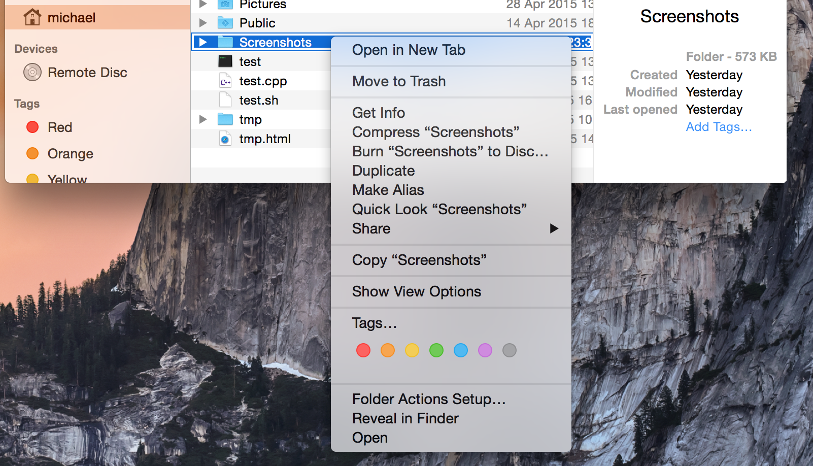
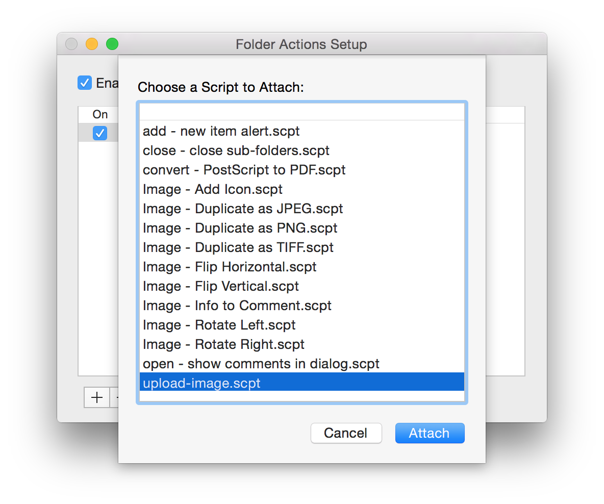

Being an overly paranoid developer I have an immediate distrust to small opaque convenience services that upload my data to servers I do not control. One such service that I use almost daily is a screenshot service. A quick Google search to see if any of those screenshot services could upload to a personal server came back empty-handed. Thinking that it can't be that hard, I decided to roll my own. Luckily, for once, it wasn't that hard, here's how I did it:
First, to make things a little cleaner and less prone to mistakes, I configured OSX to place all screenshots into a specific directory called ~/Screenshots:
# Change the screenshot directory to ~/Screenshots
$ defaults write com.apple.screencapture location ~/Screenshots/
# Restart the SystemUIServer, to start using new directory
$ launchctl stop com.apple.SystemUIServer.agent
Next, using the Apple Script Editor (included with OSX), I wrote a small Apple Script, called upload-image, which copies png files from the screenshot directory, to a remote server, using scp:
property username : "ubuntu"
property hostname : "tightloop"
property target_path : "/data/static"
property target_url : "http://image.tightloop.io/"
on adding folder items to folder_name after receiving list_files
tell application "Finder"
set random to ""
repeat 5 times
set random to random & some item of "abcdefghijklmnopqrstuvwxyz1234567890"
end repeat
set screenshot to item 1 of list_files
if name extension of screenshot is in {"png"} then
set the screenshot_path to the quoted form of the POSIX path of screenshot
do shell script ("scp " & screenshot_path & " " & username & "@" & hostname & ":" & target_path & "/" & random & ".png")
end if
set the clipboard to target_url & random & ".png"
display notification "Uploaded image, link copied to clipboard" with title "Uploaded"
end tell
end adding folder items toThen I placed the newly created upload-image script in the /Library/Scripts/Folder\ Action\ Scripts/ directory, right-clicked on the Screenshots folder and selected "Folder Actions Setup..."  and from the list of Folder Actions, I selected the upload script 
And finally on my server, which is running nginx, I simply set up a static location to serve png files:
server {
listen 80;
server_name image.example.com;
location ~ \.(png) {
root /data/static;
}
}